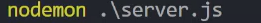

Connecting to GitHub and Installing Nodemon
The following steps will explain how to connect our newly created file to your GitHub, as well as install nodemon. Nodemon will allow us to view our file and have it auto update, which will alleviate unnecessary repitition.
GitHub
1 Intiliaze GitHub in vsCode by typing the following one line at a time:
2 Let's quickly check our file by typing the following in the terminal and changing it to match the file's name:
Installing Nodemon
3 Nagivate to the terminal as we did in our last step (VIEW --> TERMINAL) and type the following: npm install -g nodemon

4 We will start Nodemon by typing the following in the terminal: nodemon .\filename.js

Testing our file with Nodemon
5 Open up a browser and type the following: localhost:3000/
Success
Your page should look like this:

6 Return back to your VSCode file bolierplate and locate app.get and replace our app.get boilerplate from earlier to your own custom message
7 Change the port number from 3000 to another number from 1-64536, for this example we used 1234